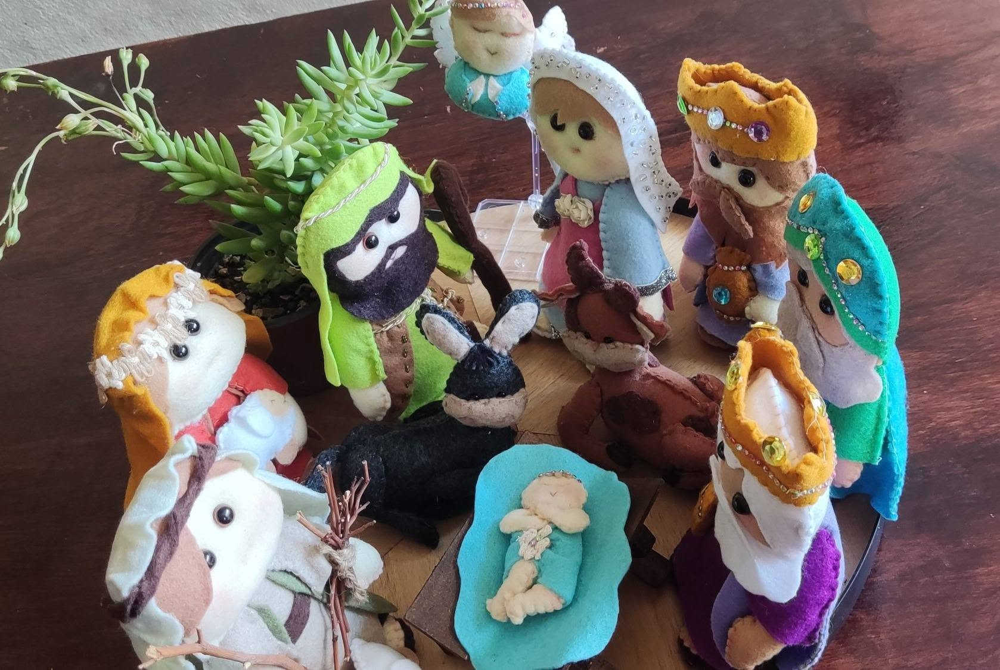
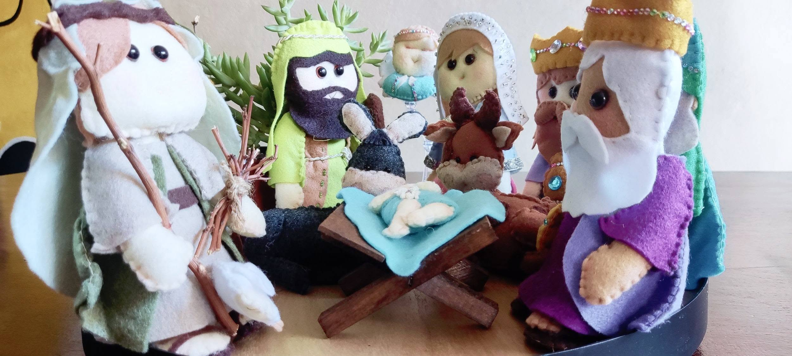
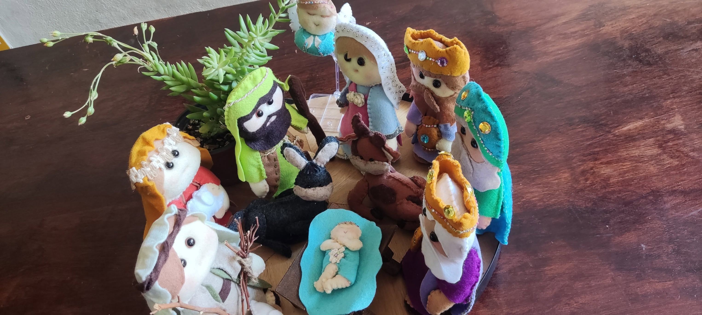

Amarillo Primavera
Marien — Nacimiento Mini Completo
Categoria: Rag Dolls
Un set completo de nacimiento en miniatura, con María, José, los reyes magos, animalitos y el niño Jesús, todo hecho a mano con fieltro y mucho detalle. Su tamaño pequeño lo hace perfecto para cualquier rincón de la casa sin perder ni un poquito de la magia navideña. Una piecita llena de ternura para celebrar la tradición en casa.